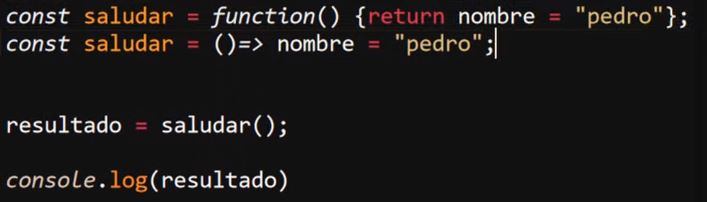

-
Usar las unciones Flecha como Expresiones
Una caracteritica particular de las funciones flecha es que estas son capases de usarse como expresiones para retornar un dato, como se ha dicho anteriormente una de las ventajas de las funciones flecha es su sintaxis reducida, la cual puede simplificarse aún más para usarse como expresión, esto se logra si función esta compuesta por una unica expresión la cual se defina en la misma linea de codigo que la declaración de la función, en cuyo caso se permite eliminar el cuerpo de la función (delimitado por "{ }") resultando en que la función trabaje como una expresión y retorne un valor por si misma.
Ejemplo Función Flecha
Ejemplo expresión con la Función Flecha
En el primer ejemplo al mostrar en consola la variable "resultado" esta muestra un "undefined", ya que la función flecha común no retorna un valor que pueda ser almacenado en la variable, unicamente se ejecuta el codigo expresado en el cuerpo de la función, por otro lado en el segundo ejemplo la función se trabaja como una expresión, por lo que esta retorna el dato en cuestión, por lo cual esta dato se almacena en la variable "resultado" y se imprime en consola.
Por ejemplo a continuación se muestra la comparación del como se realizaria el mismo retorno con una función clasica y con una función flecha, como se puede apreciar la función flecha permite simplificar bastante el codigo:
Ejemplo

-
Los Parentesis de los Parametros no son Obligatorios
En caso de que la función reciba parametros para operar y estos solo estan conformado po un solo parametro se puede eliminar los parantesis para simplificar la sintaxis, en caso de que la función reciba dos o más parametros los parentesis seran necesarios
Ejemplo
Por otro lado si la función no recibe ningun parametro los parentesis tambien serán necesarios, ya que al definirse vacios indican que no se requiere ningun parametro:
Ejemplo
-
No Son Adecuadas Para Ser Usadas Como Metodos, El "This" no Existen En Ellas Y No Pueden Ser Usadas Como Constructores
Para definir los metodos de un objeto se utilizan funciones, este es un caso de uso para el que no se recomiendan las funciones flecha, debido a que el metodo "This" se comporta de forma diferente en estas.
En las funciones normales el "this" hace referencia al elemento que esta llamando al dato dentro de esta, mientras que en las funciones flecha se dice que el "this" no existe ya que este hace referencia al objeto "window", o en el caso de estar en una nivel varias veces inferior al bloque principal del documento "this" hara referencia al objeto un peldaño por arriva, por lo tanto en ambos casos "this" ignora los elementos definidos dentro del objeto que lo ejecuta, lo que resulta a que el "This" tome como valor elementos externos al objeto.
Ejemplos
En esta imagen se puede apreciar dos funciones, la primera "Objeto" la cual usa como metodo un función tradicional, por lo tanto el "this" hace referencia a los elementos definidos dentro del objeto, por lo tanto su resultado es "Hola Lucas".
Por otro lado el segundo objeto "objeto2" usa un metodo definido con una función flecha, por lo que este al usar "this" esta hace referencia a un objeto externo (Window), por lo que este toma como valor este dato externo, dando como resultado "Hola Dalto".
Debido a este comportamento anormal del "this" en las fuciones flecha es que estas no pueden ser utilizadas como constructores de un objeto, en el caso de tener activo el modo estricto se dispara un error en caso de intentar usarla como tal, si por lo contrario el modo estricto no esta activo no se dispara el error en consola, pero de igual forma la función flecha no funcionara como constructor.
-
This Contextual
El "this" contextual hace referencia a al entorno en el que se ejecuta el "this", es to ya que como se menciono antes su comportamiento varia segun el como o donde se emplee.
Siempre que se utilise fuera de algun objeto o alguna función, es decir se utilise en el cuerpo principal del documento el metodo "this" va a hacer referencia al objeto "Window"(al menos que el modo estricto este activo, entonces no lo referencia), no obstante al usarse dentro de una función tradicional o un objeto este "this" tendra un alcanse local, en el que hará referencia a los elemtos o propiedades de estos.
Debido a esto es que no se recomienda el uso de "this" en las funciones flecha ya que en estas ignora el nivel de alcanse local y siempre mantendra el alcanse un peldaño por arriba, lo tanto siempre hará referencia al objeto que llama a la función que ejecuta a la función en la que se usa el "this".
-
Recursividad
Se trata de la practica de desarrollar una función que se llama a si misma, es una practica muy util en algunos casos, sin embargo es un recurso que es necesario saber emplear, ya que de estructurarse mal la función recursiva se puede entrar en un bucle infinito que sature el dispositivo.
El punto de la recursividad es reutilizar el codigo ya creado para cubrir siertos casos o repetir acciones de forma controlada
Ejemplo
En este ejemplo se puede apreciar una función recursiva debido a que se llama a si misma para el manejo de los errores.
-
Clausulas (o Cierres)
Se tratan de Funciones que retoran otras funciones, de ese modo la función hijo puede acceder a el ambito de la función padre, un ejemplo de esto es:
Ejemplo
resultado
Nota: En este ejemplo la función hija solo funciona si el llamado se guarda en una variable, si solo se llama a la función y se define el dato sin guardar esto dentro de una variable esta función no funciona.
Un ejemplo practico del como se integran las clausulas en el codigo es el siguiente, se muestra un codigo que selecciona el "div" que contiene un texto, añade la propedad CSS "fontSize" a este, luego selecciona tres botones, inicializa escuchadores de eventos para estos y segun cual sea el boton en el que se haga click modifica el valor de la propiedad "fontSize" que se esta añadiendo al "div":
Sin Utilizar Clausulas
Empleando Clausulas
-
Parametros por defecto
Definir parametros por defecto consiste en asignar un valor alternativo para los parametros de una función, los cuales se aplicaran en caso de que por cualquier motivo no se obtengan todos los parametros completos.
Esto es necesario ya que javaScript es un lenguaje con ciertas flexibilidad en cuanto a los parametros de las funciones se refiere, por ejmeplo si se suministra más datos de los necesario los que sobren simplemente seran ignorados, a su vez si se suministran menos la función igualmte se ejecutara aún si no puede realizar adecuadamete los procesos en esta.
A continuación se muestran dos formas en las que se definian anteriormente valores por defecto a los parametros de una función, así como una tercera forma la cual es la recomendada actualmete:
Primer metodo:

Nota: Este metodo no se recomienda en absoluto
Segundo metodo:
Metodo Actual:
En todos estos ejmeplos el ejecto es el mismo, en caso de que solo se suministre un arametro el otro se gualara a cero para realizar la operación.
-
Parametro Rest
El parametro "rest", el cual consiste en un array que alberga todos los parametros que se pasen a la función, permitiendo que una función reciba una cantidad indefinida de parametros.
La forma de declarar el parametro "rest" es con tres punto sucesivos (...) seguidos del nombre que se le asignara.
Ejemplo
resultado
Una caracteritica del parametro rest es que se pueden definir otros prametros jutno con este, pero estos deben de definirse antes de "rest", por lo tanto para funcionar adecuadamete el parametro "rest" debe definirse al ultimo en la función, por otro lado para acceder a los datos almacenados en este se utiliza el numerador de la posición del dato como en cualquier otro array.
Ejemplo
resultado
En este ejemplo se utiliza el parametro "rest" para definir x cantidad de datos numericos, luego se usa un ciclo "for" para recorrer el "rest" y operar dos de sus datos, luego mostrar los datos seleccionados en consola.